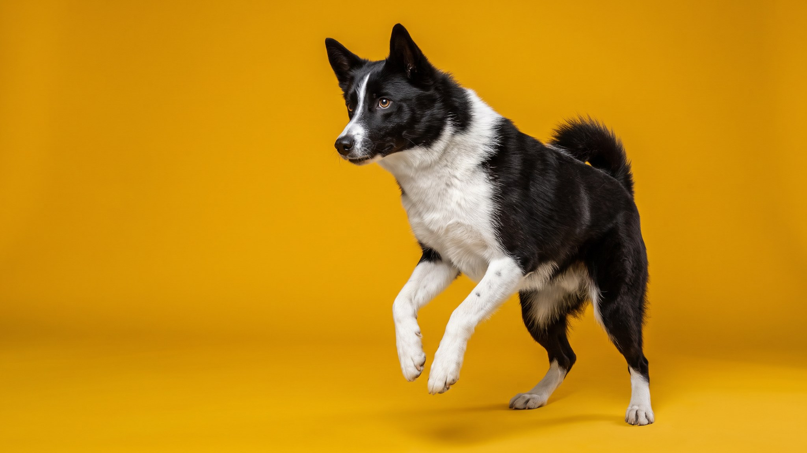

Владелец русско-европейской лайки открывает дверь подъезда, собака уже тянет в сторону ближайших кустов: нос к земле, уши вперёд. Порода работала в северных лесах по птице и пушному зверю веками, и этот рабочий режим не переключается. Читайте дальше (≈3 минуты): сколько нужно нагрузки, реально ли жить с лайкой в квартире и что с той самой густой шерстью.
🐾 У вас русско-европейская лайка?
AnimaLife соберёт уход под породу: к каким болезням есть склонность, что проверять по возрасту, чем кормить и когда пора к врачу. Бесплатно, прямо в мессенджере.
Собрать план ухода → Собрать в MAX →
У вас iPhone? AnimaLife есть в App Store
Русско-европейская лайка выведена из аборигенных лаек севера Европейской части России, стандарт закреплён в 1947 году. Порода компактнее западносибирской, но рабочий темперамент тот же: высокая энергия, сильный нюх, развитый следовой инстинкт. На охоте она работает парно с хозяином, но принимает решения сама, что приучает к независимости.
К хозяину привязана крепко, семье лояльна. С посторонними сдержана, к чужим собакам бывает конфликтна. С мелкими животными уживается плохо: преследовательный инстинкт срабатывает автоматически. Оставлять на самовыгул или спускать с поводка в незнакомом месте опасно.
Русско-европейская лайка выдерживает многочасовую работу в лесу и в городе требует того же объёма выплеска. Реальный минимум:
Недогулянная лайка лает, воет и методично разбирает квартиру. Не характер, а нерастраченная энергия.
Порода некрупная (вес 18–23 кг, высота около 52 см), так что физически вписывается в квартиру. Но жить в четырёх стенах с минимумом выходов лайке тяжело. Если хозяин работает из дома, много гуляет и выезжает за город в выходные, порода справится. Если ритм жизни офисный с двумя короткими выгулами, лучше выбрать другую породу.
В загородном доме с большим участком лайке хорошо: бегает, дежурит, использует нос по назначению. Вой на балконе у соседей в многоквартирном доме станет проблемой при первом скучном дне.
Шерсть у русско-европейской лайки двойная: жёсткая ость и плотный подшёрсток. Он защищает собаку и в мороз, и в моросящий дождь, но раз-два в год линяет обильно.
Лайка хорошо обучается при раннем начале и последовательности. Команда «ко мне» требует особой проработки: в момент погони за запахом порода переключается на инстинкт и хозяина не слышит. Отрабатывайте отзыв с щенячьего возраста, на разных территориях, с высокоценным поощрением.
Жёсткие методы дрессировки закрывают лайку, она перестаёт сотрудничать. Работает поощрение, чёткие правила и предсказуемый режим с первого дня.
Русско-европейская лайка хороша для охотника, активного туриста или загородного жителя с большим двором. В таких условиях это выносливый, преданный и внимательный компаньон.
Городскому жителю без машины, без загородных выездов и с плотным рабочим расписанием порода даст больше трудностей, чем радости. Вопросы по здоровью и наблюдению за питомцем обсуждайте со своим ветеринаром.
🐾 Ваш питомец — русско-европейская лайка?
Заведите профиль в AnimaLife: приложение запомнит породу, возраст и вес и будет подсказывать по уходу именно для неё. Вопросы AI-ветеринару — круглосуточно и бесплатно.
Завести профиль → Завести в MAX →
У вас iPhone? AnimaLife есть в App Store
🐾 Понравился разбор?
Подпишитесь на канал — каждый день разбираем по одному тревожному симптому у кошек и собак: что в пределах нормы, а когда пора к врачу. Подпишитесь, чтобы не пропустить разбор, который может спасти здоровье вашего питомца.
Материал носит информационный характер и не заменяет очную консультацию ветеринара.